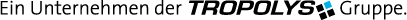

Sponsoring non-profit institutions:
| Max-Planck-Institut für Informatik | |
| Das Saarland | |
 |
Zentrum für Bioinformatik |
Sponsoring Companies: |
|
| Aventis | |
| BASF | |
| Biomax Informatics AG | |
| BioSolveIT GmbH | |
| Byk Gulden | |
| Merck | |
 |
Pulsaar |
 |
Saartoto |
| Schering | |
| Sun Microsystems | |